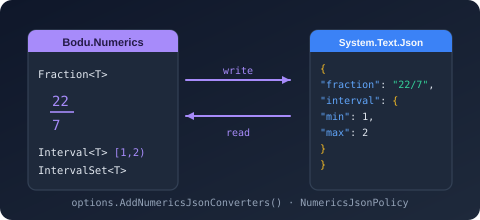

Bodu.Numerics.Serialization.Json

Bodu.Numerics.Serialization.Json is the System.Text.Json companion to Bodu.Numerics. It ships the converters and converter factories that round-trip the numeric value types — Fraction<T>, Interval<T>, DiscreteInterval<T>, IntervalSet<T>, BigDecimal, and Complex<T> — a single NumericsJsonPolicy that selects one coherent wire shape for all of them, the one-call AddNumericsJsonConverters registration, and the ToJson / FromJson convenience helpers for fractions. Part of the Numerics & Financial topic.
Bodu.Numerics.Serialization.Json is a Preview package. The core library is deliberately serialization-agnostic — its value types carry no [JsonConverter] attribute and take no dependency on System.Text.Json — so JSON support is opt-in, and a consumer of just Fraction<T> pays nothing for the serializer.
Core mental model
One policy, six registrations, one options instance. Five of the six types are open generics, so what is registered for them is a factory that binds the concrete T per request:
JsonSerializerOptions
▶ .AddNumericsJsonConverters(NumericsJsonPolicy.Strict | Lenient | Compact)
├─ FractionJsonConverterFactory → Fraction<int>, Fraction<BigInteger>, …
├─ IntervalJsonConverterFactory → Interval<int>, Interval<double>, …
├─ DiscreteIntervalJsonConverterFactory → DiscreteInterval<int>, …
├─ IntervalSetJsonConverterFactory → IntervalSet<int>, …
├─ BigDecimalJsonConverter → BigDecimal (non-generic; a single converter)
└─ ComplexJsonConverterFactory → Complex<double>, Complex<float>, …
▶ JsonSerializer.Serialize / Deserialize as normal
The shape of the library
Everything lives in the Bodu.Numerics.Serialization.Json namespace.
Registration and helpers
| Type | Purpose |
|---|---|
| NumericsJsonSerializerOptionsExtensions | AddNumericsJsonConverters(this JsonSerializerOptions options, NumericsJsonPolicy policy = Strict) — adds the five factories and the BigDecimal converter and returns the same options instance for chaining. |
| NumericsJsonPolicy | The wire-shape selector: Strict = 0, Lenient = 1, Compact = 2. |
| FractionJsonExtensions | value.ToJson(policy) and FractionJsonExtensions.FromJson<T>(json, policy) — one-shot helpers that configure a fresh options instance per call (reflection-based; annotated for trimming and AOT). |
Converters and factories
Each converter and factory has a parameterless constructor (defaulting to Strict) and a (NumericsJsonPolicy policy) constructor, so any one can also be added to JsonSerializerOptions.Converters by hand.
| Registered type | Converts | Strict / Lenient shape | Compact shape |
|---|---|---|---|
| FractionJsonConverterFactory → FractionJsonConverter<T> | Fraction<T> | { "numerator": 3, "denominator": 4 } — components as raw JSON numbers, so BigInteger round-trips exactly |
"3/4" |
| IntervalJsonConverterFactory → IntervalJsonConverter<T> | Interval<T> | { "lower", "upper", "lowerInclusive", "upperInclusive" }; { "empty": true }; lowerUnbounded / upperUnbounded markers for infinite sides |
ISO 31-11 bracket string "[1, 5)", "∅" when empty |
| DiscreteIntervalJsonConverterFactory → DiscreteIntervalJsonConverter<T> | DiscreteInterval<T> | the Interval<T> shape over the canonical closed integer bounds |
"[1, 5]" |
| IntervalSetJsonConverterFactory → IntervalSetJsonConverter<T> | IntervalSet<T> | a JSON array of Interval<T> pieces ([] when empty) |
an array of bracket strings |
| BigDecimalJsonConverter | BigDecimal | { "unscaledValue": 12340, "scale": 3 } |
decimal string "12.340" |
| ComplexJsonConverterFactory → ComplexJsonConverter<T> | Complex<T> | { "real": 3, "imaginary": 4 } — non-finite components as "NaN" / "Infinity" / "-Infinity" |
"<3; 4>" |
Choosing a policy
| Policy | Read behavior | Use case |
|---|---|---|
Strict (default) |
Object (or array) forms only. Property names compare case-insensitively; duplicate properties are rejected; unknown properties are ignored. | Canonical persistence and interchange. |
Lenient |
Everything Strict reads, plus a top-level string routed through the compact parser, "min" / "max" aliases for an interval's "lower" / "upper", and missing inclusivity flags defaulted to closed. Writes exactly what Strict writes. |
Spreadsheet and external-feed ingest. Not a canonical storage shape. |
Compact |
The single-string forms, delegating to each type's Parse / TryParse under the invariant culture. |
Size-sensitive payloads and readable log lines. |
What is deliberately not covered
- IntervalPair<T> and DiscreteIntervalPair<T> are transient operation results, not storage shapes; call
ToIntervalSet()and serialize the resulting IntervalSet<T>. - The streaming statistics aggregates (
RunningStatistics<T>,RunningQuantile<T>,MovingSum<T>,MovingMinMax<T>) are accumulators with internal state, not values; they have no converter. - No source-generated
JsonSerializerContextships here: the converters are reflection-free at the value level and slot into a context you own — see Trimming and AOT.
Scenarios this library covers
| Scenario | Reach for |
|---|---|
| Persist an exact rational without floating-point drift | Fraction<T> under Strict — components are raw JSON numbers, any T including BigInteger |
| Interchange with a system that cannot carry big JSON numbers | quote the components — the reader accepts numeric strings for every component |
| Store a range with independent endpoint inclusivity or an open side | Interval<T> under Strict — the inclusivity flags and unbounded markers are explicit |
Emit a readable "[1, 5)" in a log line or a query string |
Compact |
Ingest "min" / "max" keyed ranges from a feed |
Lenient |
Persist an arbitrary-precision decimal without narrowing to double |
BigDecimal — an exact unscaledValue / scale object, or the decimal string under Compact |
Round-trip a NaN or infinite complex component |
Complex<T> under Strict — non-finite components are strings, accepted either way on read |
| Serialize the result of a set operation | ToIntervalSet() then IntervalSet<T> |
Design choices
- Opt-in, not attribute-driven. The core types carry no
[JsonConverter]; the wire shape is a per-options decision. - Factories bind
T. Registering a factory rather than a closed converter means one registration covers every backing type; the closed converters exist for narrower manual registration. - Raw numbers, never
longordouble. Fraction components andBigDecimal's unscaled value are written as raw JSON numbers and read as numbers or numeric strings, so no intermediate primitive truncates aBigInteger. Compactis a string on purpose. A bare JSON number would invite consumers to narrow to IEEE-754double; the string forms delegate to each type's round-trippable text format instead.Lenientonly relaxes reads. It writes theStrictshape, so an import pipeline never produces non-canonical output.
Where to go next
- Core concepts — policy, factories vs closed converters, each type's wire shape, raw-number precision, trimming and AOT, failure modes.
- Getting started — install + minimal samples for each policy and each type.
- Numerics JSON serialization guide — the full wire-format reference and worked examples.
- Bodu.Numerics introduction — the value types being serialized.
- Bodu.Financial.Serialization.Json — the sibling companion package for money and exchange rates, with the same policy model.
- Bodu.Numerics.Serialization.Json API reference — full type-by-type docs.
- Runnable samples — the
JsonConverterssample project.